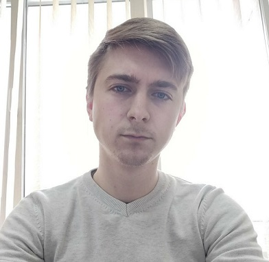

Разработка Web-приложений с использованием фреймворка Ruby on Rails
Казанский государственный университет им. В.И. Ульянова-Ленина
Степень магистра, Материаловедение
2016 - 2018
Казанский государственный университет им. В.И. Ульянова-Ленина
Степень бакалавра, Логистика, поставка материалов и управление цепочками поставок
2012 - 2016